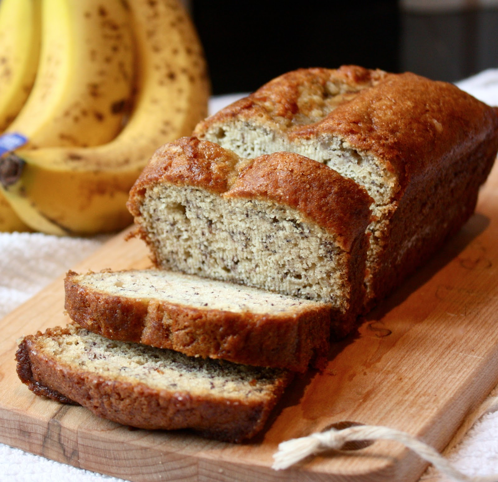

Banana Bread
WITH TOPPING

ingredients | makes 1 loaf
For the Batter
- 2 cups all-purpose flour
- 1 teaspoon baking soda
- 1/4 teaspoon salt
- 1 teaspoon Penzy's Cake Spice (see note below)
- 1/2 cup unsalted butter, softened
- 3/4 cup packed light brown sugar
- 2 large eggs, lightly beaten
- 2 teaspoons pure vanilla extract
- 2 1/3 cups mashed overripe bananas (about 5 medium)
For the Topping
- 1/4 all-purpose flour
- 1/4 cup packed light brown sugar
- 1/2 teaspoon Penzy's Cake Spice
- pinch of salt
- 2 tablespoons chilled unsalted butter, diced
preparation | 15 minutes
- Preheat oven to 350°F. Lightly grease a 9x5 inch loaf pan - I used coconut oil spray from Trader Joe's.
- In a large bowl, combine flour, baking soda, salt and cake spice. In another large bowl, using an electric hand mixer on medium speed, cream together butter and brown sugar until light and fluffy - about 3 minutes. Stir in eggs, vanilla and mashed bananas until well blended. Using a wooden spoon or rubber spatula, gently stir banana mixture into flour mixture - stirring until ingredients are just combined. Pour batter into prepared loaf pan.
- Prepare the topping. In a medium bowl, combine flour, brown sugar, cake spice and salt. With your hands, work in butter pieces, until small clumps form. Spread topping evenly over batter.
- Bake in preheated oven for 60 to 65 minutes, until a toothpick inserted into center of the loaf comes out clean. Let bread cool in pan for 10 minutes, then carefully turn out onto a wire rack.